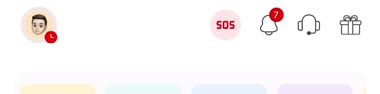
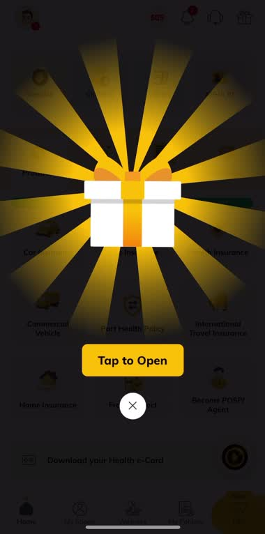
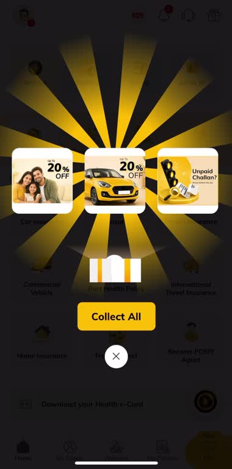
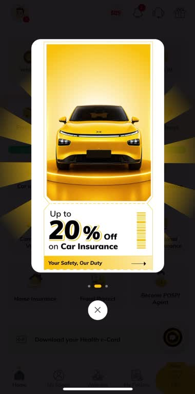

Designing Reward Discovery Through Interaction
Turning a hidden benefit into a discoverable, gamified product experience — Digit already offered rewards and wellness benefits. The challenge was whether users could discover them at the right moment.
Screen capture of the shipped flow: the Get Rewards FAB, the gift-box unboxing sequence, the offer burst, and the redemption card — recorded straight from the live Digit app.
Reduce discovery friction by making important actions visually prominent, immediately understandable and rewarding to interact with.
Rewards existed. Nothing pointed at them.
The original rewards experience depended on users intentionally navigating toward offers — a weak position for a secondary feature competing with insurance actions, policy info, and renewals on the home screen.
01 — No interaction cue
Offers existed within the ecosystem, but there was no strong interaction cue encouraging users to explore them.
02 — Wellness benefits missed
The category navigation relied heavily on a horizontally scrollable pattern, making certain benefits easy to overlook.
The UI needed to answer three questions almost instantly:
From passive offer visibility to an interactive FAB
A dedicated Get Rewards floating action button, placed within the app's persistent chrome — a high-salience entry point without restructuring the home screen's information architecture.
Rather than jumping straight into another page, the interaction uses progressive disclosure:
Idle
FAB at rest
Reward cue
Visual pulse
Tap
Modal focus
Unboxing
Gift opens
Offer reveal
Cards fan out
Redeem
Primary CTA
UI principles used
Making discovery feel rewarding before the reward itself
A short sequence of functional UI states, not a decorative animation. On tap, the interface dims into a modal focus state while the reward object becomes the visual hero — each state prototyped and pressure-tested for timing, hierarchy, and exit behaviour.




Each state was prototyped in Figma to evaluate transition timing, component positioning, visual hierarchy, CTA visibility, perceived tap feedback, animation pacing, offer-card readability, exit behaviour, and continuity between states. The animation works as functional feedback — confirming the user's action triggered a new state — not motion added for visual appeal alone.
Five questions the interaction model had to answer
The experience went through multiple interaction explorations in Figma before arriving at the final flow.
| Question | Resolution |
|---|---|
| Trigger positioning | How visible could the reward affordance become without competing with core insurance actions? |
| Side-card behaviour | Could upcoming offers create curiosity without interrupting the user? |
| Overlay vs. page | Retain the homepage as contextual background, or open a new page? |
| Reveal sequencing | At what stage should users see the reward vs. the redemption action? |
| Offer browsing | How could multiple offers stay accessible without a dense overlay? |
Final approach: retain the homepage underneath the interaction, use an overlay-based flow to minimise context switching — the reward experience reads as an extension of the app, not a disconnected promotional surface.
Testing behaviour, not visual preference
Not "do users like the animation?" — but "do users notice the entry point, understand what it represents, and successfully reach an offer?"
What user behaviour revealed
Rewards needed a stronger entry signal.
Users opening the app for an insurance task rarely went looking for a rewards section on their own.
The interaction needed immediate feedback.
A promotional icon alone could easily read as decorative content.
The offer itself needed to appear quickly.
Too much animation before showing value risked increasing perceived effort.
Improving Wellness navigation
The rewards work exposed a broader pattern: valuable features lose value when the navigation model makes them hard to find. Wellness subscriptions relied on a horizontal category scroller — compact, but with several categories sitting outside the immediate viewport, creating weak information scent.
| Before | After |
|---|---|
| Category access | Horizontal scroller, hidden categories |
| Active state | Weak differentiation between selected and inactive |
| Discovery | Implicit swipe gesture required |
| Switching | Slower, multi-swipe to reach relevant category |
| Category access | High-visibility explicit tab architecture |
| Active state | Clear active vs. inactive feedback |
| Discovery | Choices exposed, not hidden behind a gesture |
| Switching | Direct tap between benefit categories |
Before → Behaviour → After
Reward and wellness benefits existed, but discovery depended heavily on intentional navigation.
Users prioritised core insurance tasks and were less likely to explore secondary features without strong visual or navigational cues.
Clearer entry points, stronger interaction feedback, and shorter pathways to high-value benefits.
The interaction, as a component system
Defined at the component-state level to keep visual design, prototype behaviour, and the shipped product consistent.
Measured outcome
+6.5%
following the gamified reward discovery experience.
+2.3%
after replacing the low-visibility scroller with explicit tabs.
Engagement doesn't always need more content — sometimes the bigger opportunity is a better path to value that already exists.